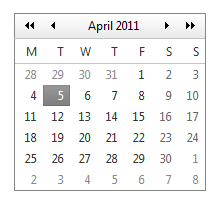

Робота з датою і часом, таймери.
Формат дати/часу.
Для роботи з датою та часом у JS є об’єкт Date.
Створити змінну з датою і часом можна таким чином:
// створити змінну дати з поточним часом:
var date = new Date();
// встановити дату з заданним значенням у мілісекундах з 1 січня 1970 року:
date = new Date(dateVal);
// встановити дату з заданими значеннями компонентів дати:
date = new Date(year, month, date[, hours, minutes, seconds, ms] );
date = new Date(2015, 0, 1, 12, 0, 0);
// встановити дату з заданими значеннями у вигляді строки:
date = new Date('21 May 1958 10:12');
Якщо вивести значення цієї змінної у консоль, побачимо щось схоже на:
Sun Feb 01 2015 12:00:00 GMT+0200 (Финляндия (зима))
У дати є ще один формат: число - кількість мілісекунд, що пройшли з 1 січня 1970 року:
// встановити дату у числовому форматі з поточним часом:
date = Date.now();
//добавити до дати 1 день
date = date + (24 * 60 * 60 * 1000);
date = date + (24 * 3600 * 1000);
date = date + (86400000); // незрозуміле, "магічне" число
Завдання.
- Створіть кнопку.
- Виводьте в консоль час в мілісекундах, що проходить між двома кліками по кнопці.
- Виведіть повідомлення що показує дату та час, які настануть через два тижня, 6 годин і 20 хвилин від теперішнього.
Методи для роботи з датою/часом.
Об’єкт Date має багато методів для обробки даних, які він містить.
Для початку давайте розберемося з деякими особливостями в компонентах дати.
Нумерація місяців починається з нуля:
0 - січень;
1 - лютий;
2 - березень;
...
10 - листопад;
11 - грудень.
Нумерація днів тижня починається з нуля і неділі:
0 - неділя;
1 - понеділок;
...
5 - п'ятниця;
6 - шабат.
Дні місяця починаються з 1 і до 31.
Години: 0..23.
Хвилини та секунди: 0..59 (високосна секунда, не підтримується у JS).
Мілісекунди: 0..999.
Основні методи (весь список методів на http://javascript.ru/Date):
// розпарсити строку в дату:
date = Date.parse("10-24-2015, 06:34");
// перетворити дату в строку (числовий формат перетвориться в строку-число):
date.toString();
// перетворити об'єкт дати в число:
date.valueOf();
alert(new Date(2017, 0, 1).valueOf());
Робота з компонентами дати:
// повертають компоненти дати:
date.getFullYear();
date.getMonth();
date.getDate();
date.getDay(); // повертає день тижня
date.getHours();
date.getMinutes();
date.getSeconds();
date.getMilliseconds();
// встановлює нове значення компонента дати:
date.setFullYear(x);
date.setMonth(x);
date.setDate(x);
date.setHours(x);
date.setMinutes(x);
date.setSeconds(x);
date.setMilliseconds(x);
Метода setDay() немає, тому що день тижня - це обчислювана величина.
date.getYear() - метод, що не рекомендується використовувати. Він працював до 2000 року і повертав останні дві цифри року: 96, 98, 99. Зараз він повертає 116, 117...
Робота з методами, що працюють з таймзонами, UTC-часом, представленням часу в локальному форматі вам знадобляться при роботі з крупними мультимовними сайтами, що працюють одночасно в багатьох часових поясах. Нічого складного в цих методах немає, розібратися в них зможете самі, головне - правильно побудувати логіку алгоритму.
Об'єкт часу є автокориговочним. Це означає, що ви не зможете встановити дату 29 лютого у невисокосний рік, дата автоматично встановиться на 1 березня.
Якщо в один з компонентів встановити значення більше, ніж допустиме - автоматично виникне зсув на наступні дати, години і т.д.
Завдання.
- Виведіть повідомлення з номером поточного дня тижня.
- Виведіть повідомлення з назвою поточного дня тижня.
- Виведіть повідомлення з датою, що була 100 днів тому.
- Створіть функцію, що повертає задану їй дату в форматі "дд/мм/рр" (24/05/17). Виведіть повідомлення з завтрашньою датою в цьому форматі.
Таймери.
Таймер - це затримка виконання функції на вказаний час.
JavaScript підтримує роботу з двома типами таймерів - одноразовим setTimeout() та багаторазовим setInterval().
Кожна з цих функцій приймає в себе щонайменше 2 аргумента: функцію, що має виконатися, і час в мілісекундах:
var i = 5;
function fun(){ console.log(i++); }
setTimeout(function(){ console.log('hello!'); }, 5000);
setInterval(fun, 1000);
Якщо у функцію треба передати аргументи - вони прописуються в кінець, після часу затримки:
setTimeout(function(a, b, c) { console.log(a + b + c); }, 3000, 5, 10, 20);
function fun(k){ console.log(k); }
setInterval(fun, 1000, 'hello');
Таймер можна зупинити, вимкнути. Кожна з вищевказаних функцій повертає ідентифікатор таймера (число), зупинити можна двома функціями:
var a = setTimeout(fun, 5000);
var b = setInterval(fun, 8000);
button.onclick = function(){
clearTimeout(a);
clearInterval(b);
}
Функції таймерів є асинхронними, тобто - вони можуть виконуватися паралельно з виконанням іншого коду. Про це треба пам'ятати і бути обережним.
Розглянемо приклади:
// що відобразить alert?
var x = 5;
setTimeout(function(){ alert(x); }, 100);
x = 10;
// хочемо вивести в консоль текст перших 5-и абзаців:
var p = document.querySelectorAll('p');
for (var i = 0; i < 5; i++){
setTimeout(function(){ console.log(p[i].innerText); }, (i + 1) * 1000);
}
Останній варіант має декілька варіантів правильного розв'язку:
// використаємо let замість var:
var p = document.querySelectorAll('p');
for (let i = 0; i < 5; i++){
setTimeout(function(){ console.log(p[i].innerText); }, (i + 1) * 1000);
}
// передамо у функцію потрібний абзац у якості аргумента:
var p = document.querySelectorAll('p');
for (var i = 0; i < 5; i++){
setTimeout(function(e){ console.log(e.innerText); }, (i + 1) * 1000, p[i]);
}
// можна використати метод forEach, з ним також код буде працювати вірно. Спробуйте самі.
Домашнє завдання.
-
На наступне заняття підготуйте новий проект: файли html, css, js.
В html-файлі створіть декілька полів ввода з класом "js-date", пару span-кнопок:
<p>Оформіть створені елементи стилями на свій смак.
<time id="date1">дд.мм.рррр</time>
<span class="js-date" data-for="date1">Вибрати дату</span>
</p>
Створіть div#datepicker з табличкою довільного місяця і заголовком, щось на зразок цього (але український варіант):

Наступні завдання виконуйте у пісочниці чи проекті по домашньому завданню №43. - Через 5 секунд після відкриття сторінки вивести на екран повідомлення "5 seconds!".
- Зробити таймер, що починає відлік з 3:30, рахує посекундно у зворотньому напрямку і після досягнення значення 0:00 замість цифр видає текст "BOOM!!!" (прим.: тероризм - це погано).
-
Зробити годинник, що відображає в браузері поточні дату та час - день, місяць, рік, день тижня, години, хвилини, секунди. Синхронізацію проводити 1 раз на 5 хвилин.
Рекомендації до виконання: раціонально створити масив змінних [Y, M, D, d, h, m, s] та 3 функції: синхронізацію з годинником комп’ютера; функцію, що повертає оформлену строку з датою та часом та функцію, яка буде робити розрахунки додавання секунди та перевірки хвилин, годин і т.п. на перевищення допустимих значень. В таймері setInterval потрібно зробити додавання секунди, виведення строки та 1 раз на 300 циклів проводити синхронізацію.
Зауваження. Можна щосекунди брати системний час та виводити його вбудованими функціями, типу .toString(), .toLocaleString() і т.п., але перед нами стоїть задача навчитися оперувати складовими дати та часу.
Корисні посилання: